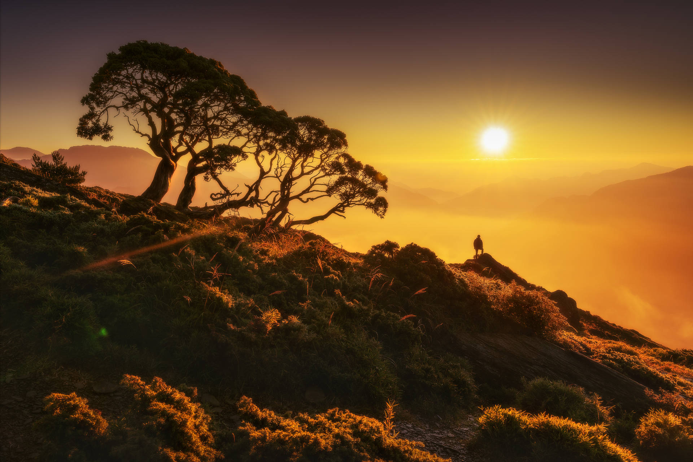

Exploring the Mountains
| Shruti
Introduction
There is something truly magical about exploring the mountains. The fresh air, the scenic views, and the sense of adventure combine to create an unforgettable experience. Whether you are an experienced hiker or a beginner, the mountains offer something for everyone.
The Beauty of Mountain Landscapes
Mountain landscapes are characterized by their dramatic peaks, lush green forests, and tranquil valleys. Each mountain range has its unique charm and beauty, offering a diverse range of scenery to explore:
- Majestic snow-capped peaks that tower above the surroundings
- Dense forests teeming with wildlife
- Serene alpine lakes reflecting the sky
Conclusion
Exploring mountain landscapes is a rewarding and inspiring experience. It offers a chance to connect with nature and escape the hustle and bustle of everyday life. So pack your bags, lace up your hiking boots, and set out on an adventure to discover the beauty of the mountains.